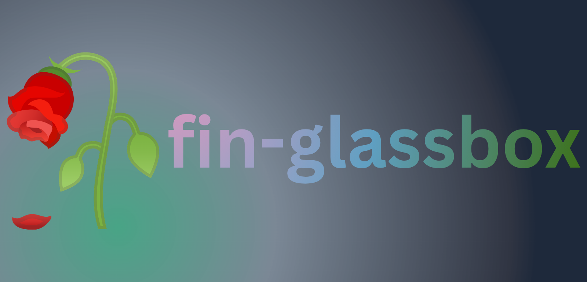
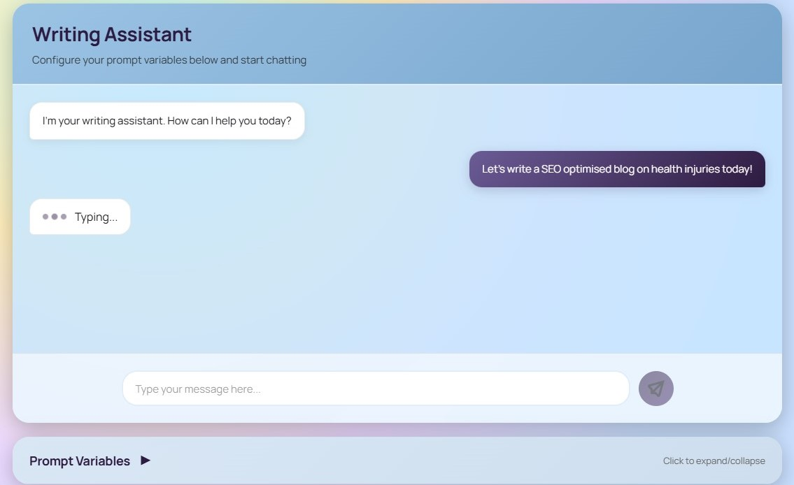

QUANTPyTorch / FinBERT / GNN
Fin-Glassbox
A multi-module, explainable financial decision system combining market and news representations, risk modelling and fusion constraints.
PyTorchFinBERTGNNFinancial ML
I'm Ibrahim Hussain. I design AI systems, engineer data pipelines and study decisions under uncertainty — from document forensics to financial risk.
Applied ML · Data engineering · Analytics · International opportunities
An engineering-led portfolio built on models, datasets, applications, internships and real experiments.
Reported accuracy across three retention models developed during my PTCL internship.
Smartphone records structured for MobileInfoAnalytics in a relational database.
Major connected disciplines: AI systems, data engineering and financial modelling.
My work crosses disciplines. Choose the viewpoint most relevant to your team.
DeepDocForgery, LLM systems, multimodal modelling ↗
Relational ETL, automation, Python, Linux ↗
Retention, business intelligence, economic forecasts ↗
Financial risk systems, time series and explainability ↗

QUANTA multi-module, explainable financial decision system combining market and news representations, risk modelling and fusion constraints.
Multimodal document forgery detection combining JPEG-domain evidence, spatial representations and degradation-aware fusion.

ML-AIA multi-agent content pipeline with orchestration, structured generation, retries and a Flask/PostgreSQL backend.
A relational data platform developed during my PTCL internship: 4,303 smartphone records across 28 tables from six data sources.
Languages, infrastructure, modelling tools and data platforms I have used in hands-on work.
This rotating, draggable tag sphere is adapted from the supplied Aahana source implementation. Filter it by category or drag it to rotate.
← DRAG TO ROTATE · AUTO-SPINS →
Final-year Data Science undergraduate, interested in applied ML, data engineering and analytics opportunities across Europe and beyond.
Contact Ibrahim ↗